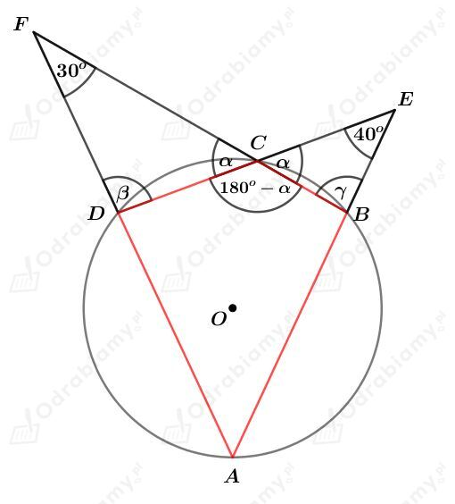

a)
Dany jest trapez r贸wnoramienny przedstawiony na rysunku:
Suma miar kt贸w przy jednym ramieniu trapezu wynosi 180o, wic
Wyznaczmy sum miar przeciwlegych kt贸w tego trapezu. Mamy:
Zatem na trapezie r贸wnoramiennym mo偶na opisa okrg.
b)
Rysunek:
Suma miar kt贸w przy jednym ramieniu trapezu wynosi 180o, wic
Na tym trpaezie mo偶na opisa okrg, wic
Zatem trapez ten jest trapezem r贸wnoramiennym.
a)
Rysunek:
W trapez ten mo偶na wpisa okrg, wic
Promie okrgu wpisanego w ten trapez ma dugo 2,5 cm, zatem
Wyznaczmy obw贸d tego trapezu. Mamy:
Wyznaczmy pole tego trapezu. Mamy:
b)
Rysunek:
W trapez ten mo偶na wpisa okrg, wic
std
Korzystajc z twierdzenia Pitagorasa dla tr贸jkta AED mamy:
Wyznaczmy obw贸d tego trapezu. Mamy:
Wyznaczmy pole tego trapezu. Mamy:
c)
Rysunek:
Okrg o promieniu dugociR=1 opisany na tym trapezie jest r贸wnie偶 opisany na tr贸jkcie ABD. Korzystajc z twierdzenia sinus贸w mamy:
Korzystajc z funkcji tangens w tr贸jkcie AED mamy:
Korzystajc z twierdzenia Pitagorasa dla tr贸jkta AED mamy:
W ten trapez mo偶na wpisa okrg, wic:
Korzystajc z twierdzenia Pitagorasa dla tr贸jkta BDE mamy:
Wyznaczmy pole tego trapezu. Mamy:
Wyznaczmy obw贸d tego trapezu. Mamy:
Rysunek:
Promie okrgu wpisanego w ten trapez ma dugo1,5, zatem
Rozwa偶my tr贸jkt AED. Korzystajc ze zwizku midzy dugociami bok贸w w tr贸jkcie o ktach 30o, 60o, 90o mamy:
Rozwa偶my tr贸jkt FBC. Korzystajc ze zwizku midzy dugociami bok贸w w tr贸jkcie o ktach 30o, 60o, 90o mamy:
W ten trapez mo偶na wpisa okrg, wic:
Wyznaczmy pole tego trapezu. Mamy:
a)
Rysunek:
Niech R bdzie dugoci promienia okrgu opisanego na tym trapezie.
Okrgopisany na tym trapezie jest r贸wnie偶 opisany na tr贸jkcieABD. Korzystajc ztwierdzenia sinus贸wmamy:
std
b)
Rysunek:
Rozwa偶my tr贸jktEBD. Korzystajc ze zwizku midzy dugociami bok贸w w tr贸jkcie o ktach30o,60o,90omamy:
wic
Korzystajc ztwierdzenia Pitagorasadla tr贸jktaAEDmamy:
Okrg o promieniu dugociRopisany na tym trapezie jest r贸wnie偶 opisany na tr贸jkcieABD. Korzystajc ztwierdzenia sinus贸wmamy:
std
Obliczmy pole tego koa. Mamy:
Rysunek:
Zauwa偶my, 偶e
W ten trapez mo偶na wpisa okrg, wic:
Korzystajc ztwierdzenia Pitagorasadla tr贸jktaAEDmamy:
Wyznaczmy pole tego trapezu. Mamy:
Rysunek:
Zauwa偶my, 偶e:
W ten trapez mo偶na wpisa okrg, wic:
Korzystajc ztwierdzenia Pitagorasadla tr贸jktaAEDmamy:
Wykazalimy, 偶e je偶eli w trapez r贸wnoramienny mo偶na wpisa okrg, to dugo wysokoci tego trapezu jest redni geometryczn dugoci jego podstaw.
a)
Dany jest romb o kcie ostrym 悸i o boku dugoci a.
Rysunek:
Rozwa偶my tr贸jkt prostoktny AED. Wyznaczmy sinus kta . Mamy:
Dany jest okrg wpisany w ten romb. Dugo promienia r tego koa stanowi poow dugoci wysokoci tego rombu. Mamy std:
Wyznaczmy pole tego koa. Mamy:
b)
Dany jest romb o kcie ostrym 悸i o polu r贸wnym P.
Rysunek:
Dany jest okrg wpisany w ten romb. Dugo promienia r tego koa stanowi poow dugoci wysokoci tego rombu. Mamy std:
Rozwa偶my tr贸jkt prostoktny AED. Wyznaczmy sinus kta . Mamy:
czyli
Wiedzc, 偶e pole tego rombu wynosi P mamy:
Rysunek:

Rozwa偶ajc tr贸jkty DCF oraz CBE otrzymujemy:
oraz
Mamy wic:
Na czworokcie ABCD mo偶na opisa okrg, wic suma miar przeciwlegych kt贸w jest r贸wna 180o. Mamy std:
Wyznaczmy miary kt贸w czworokta ABCD. Mamy:
Rysunek:
Korzystajc z twierdzenia o siecznych mamy:
czyli
Odp. Promie danego okrgu ma dugo 6.